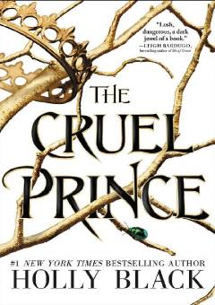

TCParilar olamida yashayotgan o'lik qiz Judening xavfli saroy kurashlaridagi sarguzashtlari.
Bu roman Holly Black tomonidan yozilgan 'The Folk of the Air' seriyasining birinchi qismi. O'n yetti yoshli o'lik qiz Jude va uning singillarining parilar olamidagi hayoti, saroy intrigalari va xavfli Yuqori Saroydagi o'rnini topish uchun kurashi tasvirlanadi. Kitob 2018-yilda Little, Brown and Company tomonidan nashr etilgan.